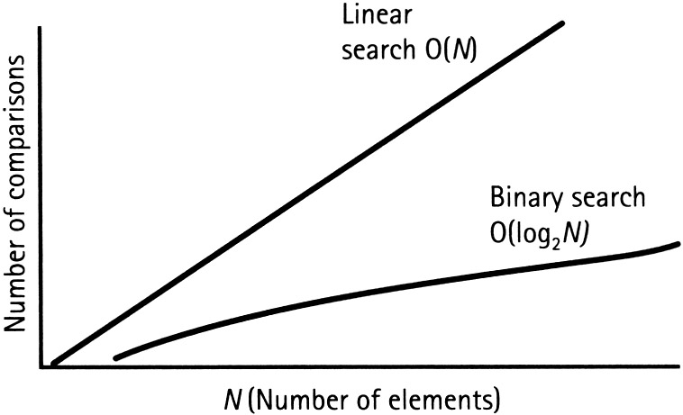

Algorithms And Complexity
An Introduction to the Complexity and Algorithms
In computer science, analysis of algorithms is a very crucial part. It is important to find the most efficient algorithm for solving a problem.
It is possible to have many algorithms to solve a problem, but the challenge here is to choose the most efficient one.
Now the point is, how can we recognize the most efficient algorithm if we have a set of different algorithms? Here, the concept of space and time complexity of algorithms comes into existence.
Space and time complexity acts as a measurement scale for algorithms. We compare the algorithms on the basis of their space (amount of memory) and time complexity (number of operations).
The total amount of the computer's memory used by an algorithm when it is executed is the space complexity of that algorithm.
We’ll not discuss space complexity in this article (to make this article a bit smaller).
Time Complexity
So, the time complexity is the number of operations an algorithm performs to complete its task (considering that each operation takes the same amount of time).
The algorithm that performs the task in the smallest number of operations is considered the most efficient one in terms of the time complexity.
However, the space and time complexity are also affected by factors such as your operating system and hardware, but we are not including them in this discussion.
Now to understand the time complexity, we will take an example in which we’ll compare two different algorithms which are used to solve a particular problem.
The problem is searching. We have to search for an element in an array (in this problem, we are going to assume that the array is sorted in ascending order).
To solve this problem we have two algorithms:
1. Linear Search.
2. Binary Search.
Let’s say the array contains ten elements, and we have to find the number ten in the array.
const array = [1, 2, 3, 4, 5, 6, 7, 8, 9, 10];
const search_digit = 10;
Linear search algorithm will compare each element of the array to the search_digit. When it finds the search_digit in the array, it will return true.
Now let’s count the number of operations it performs. Here, the answer is 10 (since it compares every element of the array). So,
Linear search uses ten operations to find the given element (these are the maximum number of operations for this array; in the case of Linear search, this is also known as the worst case of an algorithm).
In general, Linear search will take n number of operations in its worst case (where n is the size of the array).
Let’s examine the Binary search algorithm for this case.
Binary search can be easily understood by this example:
If we try to apply this logic on our problem then, first we’ll compare search_digit with the middle element of the array,
that is 5. Now since 5 is less than 10, then we will start looking for the search_digit in the array elements greater than 5,
in the same way until we get the desired element 10.
Now, try to count the number of operations binary search took to find the desired element. It took approximately four operations.
Now, this was the worst case for binary search. This shows that there is a logarithmic relation between the number of operations
performed and the total size of the array.
number of operations = log(10) = 4(approx)
for base 2
We can generalize this result for Binary search as:
For an array of size n, the number of operations performed by the Binary Search is: log(n)
The Big O Notation
In the above statements, we saw that for an array of size n, linear search will perform n operations to complete the search. On the other hand, Binary search performed log(n) number of operations (both for their worst cases). We can represent this as a graph (x-axis: number of elements, y-axis: number of operations).

It is quite clear from the figure that the rate by which the complexity increases for Linear search is much faster than that for binary search.
When we analyse an algorithm, we use a notation to represent its time complexity and that notation is Big O notation.
For Example: time complexity for Linear search can be represented as O(n) and O(log n) for Binary search (where, n and log(n) are the number of operations).
The Time complexity or Big O notations for some popular algorithms are listed below:
1. Binary Search: O(log n)
2. Linear Search: O(n)
3. Quick Sort: O(n * log n)
4. Selection Sort: O(n * n)
5. Travelling salesperson : O(n!)
Conclusion
I really appreciate your efforts if you are still reading this article.
Now, you must be thinking - why is time complexity so important to understand?
We know that for a small number of elements (say 10), the difference between the number of operations performed by
binary search and linear search is not so big. But in the real world, most of the time, we deal with problems that have big chunks of data.
For example, if we have 4 billion elements to search for, then, in its worst case, linear search will take 4 billion
operations to complete its task. Binary search will complete this task in just 32 operations. That’s a big difference.
Now let’s assume that if one operation takes 1 ms for completion, then binary search will take only 32 ms whereas linear search
will take 4 billion ms (that is approx. 46 days). That’s a significant difference.
This is the reason why studying time complexity becomes important when it comes to such a big amount of data.